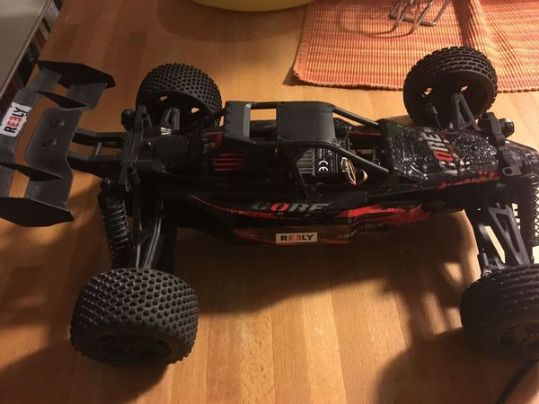
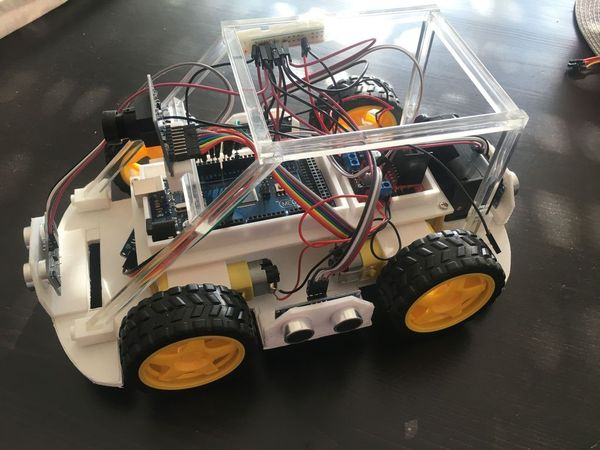

Chapter 2 Resources
In this section interesting resources for different topics are listed
2.1 Meetups
2.1.1 Esslinger Makerspace Projekt: Autonomen RoboCar bauen
https://www.meetup.com/Esslingen-Makerspace/
Ob ihr euer eigenes RoboCar entwickeln wollt, oder lieber ein kleines Team bilden wollt, hier seit ihr richtig.

2.1.2 Autonomous Mobility Berlin
https://www.meetup.com/autonomous-mobility-berlin/
This is a group for anyone interested and intrigued by Autonomous Mobility, Self-Driving Cars (SDC). Robots. We will cover topics on related technologies - Computer Vision, Deep Learning, Reinforcement learning, evolutionary computation, Sensor Fusion, ROS etc..
2.2 RoboCar projects
2.2.1 DIY RoboCars
https://diyrobocars.com/about/
This is the sister site to DIY Drones and resource/community companion to the DIY Robocars Meetup Group. Created by Chris Anderson of 3DR.
2.2.2 Donkey car
An opensource DIY self driving platform for small scale cars. RC CAR + Raspberry Pi + Python (tornado, keras, tensorflow, opencv, ….)
The documentation of the project includes:
- Assemble hardware.
- Install software.
- Calibrate your car.
- Start driving.
- Train an autopilot.
- Experiment with simulator

The code can be found at github
2.2.3 Sunfounder Smart Video Car Kit for Raspberry Pi with Android App
https://www.sunfounder.com/robotic-drone/smartcar/smart-video-car-kit/rpi-car.html
This is a complete learning kit based on Raspberry Pi with Android App. For better learning, an elaborately-written user manual, code with explanation and thorough schematic diagrams are provided.

Sunfounder software is found at github
2.3 Simulators
2.3.1 Donkey Simulator
http://docs.donkeycar.com/guide/simulator/
Experiment with training a donkey car to drive in simulation. This simulator is built on the the Unity game platform, uses their internal physics and graphics, and connects to a donkey Python process to use our trained model to control the simulated Donkey.
2.4 Software
2.4.1 Udacitiy open source SDC
https://github.com/udacity/self-driving-car
At Udacity, we believe in democratizing education. How can we provide opportunity to everyone on the planet? We also believe in teaching really amazing and useful subject matter. When we decided to build the Self-Driving Car Nanodegree program, to teach the world to build autonomous vehicles, we instantly knew we had to tackle our own self-driving car too.
Together with Google Self-Driving Car founder and Udacity President Sebastian Thrun, we formed our core Self-Driving Car Team. One of the first decisions we made? Open source code, written by hundreds of students from across the globe!